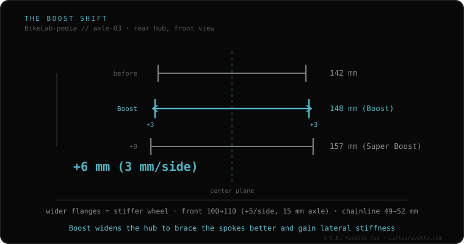

Boost is the standard that widened the hub to make big wheels stiffer. Versus non-Boost, the rear goes from 142 to 148 mm (+6) and the front from 100 to 110 mm (+10). That opens the spoke angle (stiffer wheel) and shifts the chainline to 52 mm. The key: the frame/fork width and the wheel width must match. It isn't interchangeable without conversion: a Boost wheel won't fit a 142 frame, though a 142 hub can be adapted to a Boost frame with a kit.
It's the line dividing modern MTB from pre-2016. Knowing which side your bike is on decides which wheels you can buy.
Boost doesn't change the cassette or axle type (still 12/15 mm thru): it changes hub width and, with it, wheel position and chainline. Non-Boost (142 rear, 100 front) is still alive on road, gravel and earlier MTB. Mixing requires an exact width match between wheel and frame/fork.

A Boost wheel won't fit a non-Boost frame/fork. The other way, a 142 hub can be adapted to a Boost 148 frame with a spacer kit (and rotor repositioning), but a Boost hub can't be shrunk. Confirm your frame width before buying the wheel.
If you don't know which axle, width or thread your frame uses, send us the case. Real diagnosis, nothing to sell you. Message us on WhatsApp
No. The Boost hub is wider (148/110) than the non-Boost seat (142/100). It won't fit without conversion, and a Boost hub can't be narrowed.
Yes, with an endcap and rotor spacer kit, re-dishing the wheel. Not all hubs allow it ideally.
For modern 29-inch MTB, yes: it adds real rigidity. On road and gravel, non-Boost (142/100) remains the standard.